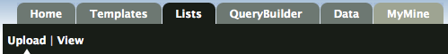
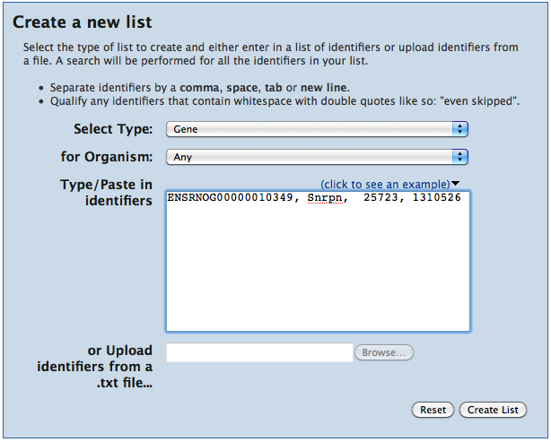

RatMine can operate on custom lists of data. You can save lists from results pages or create them by uploading lists of identifiers. Lists can be used when running template queries and analysed by a series of widgets on a list analysis page. You can merge, subtract and find common members if you have more than one list.
RatMine includes a set of 'Public' lists that we think might be useful for our users. These lists originate from the Rat Genome Database.
We can add more lists at any time - it only takes a few minutes - so if you have a suggestion, let us know!
All lists, public ones as well as personal ones (if you are logged in) can be viewed on the Lists page, where you can search them and do operations on them.
![[Click lists in the menu bar]](toolbar_view.png)
To create a new list yourself, click on 'Lists', and then on 'Upload' in the toolbar on any RatMine page:
RatMine's list creation tool helps you upload a list of identifiers, the list can contain a mix of identifier types.
Now upload the example list:
